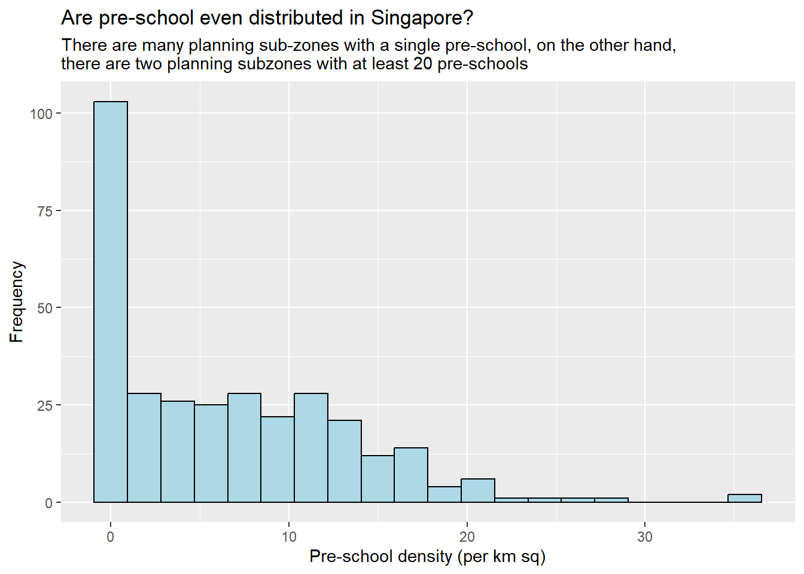
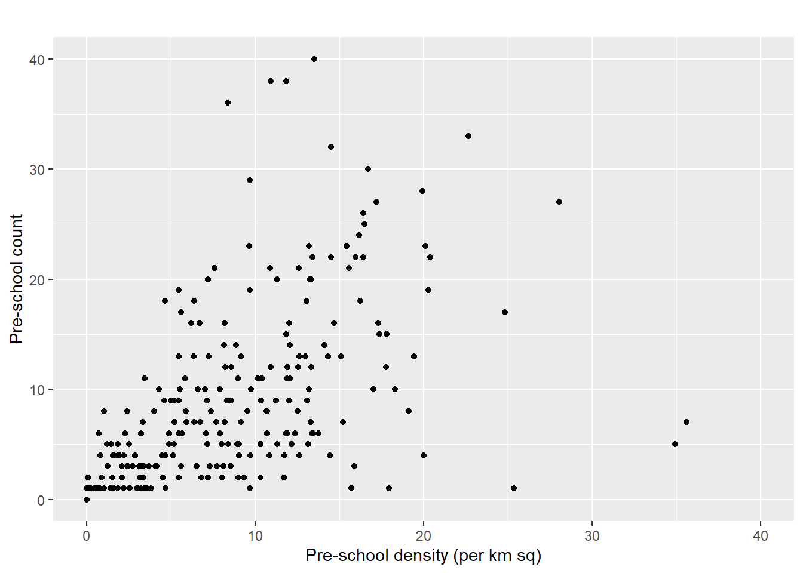
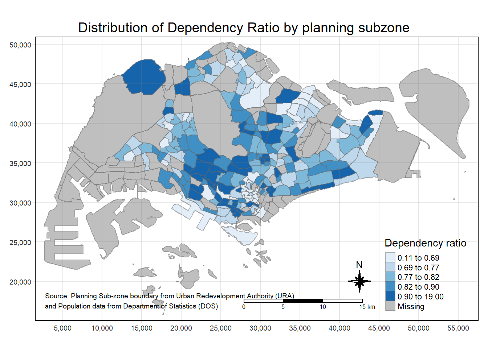
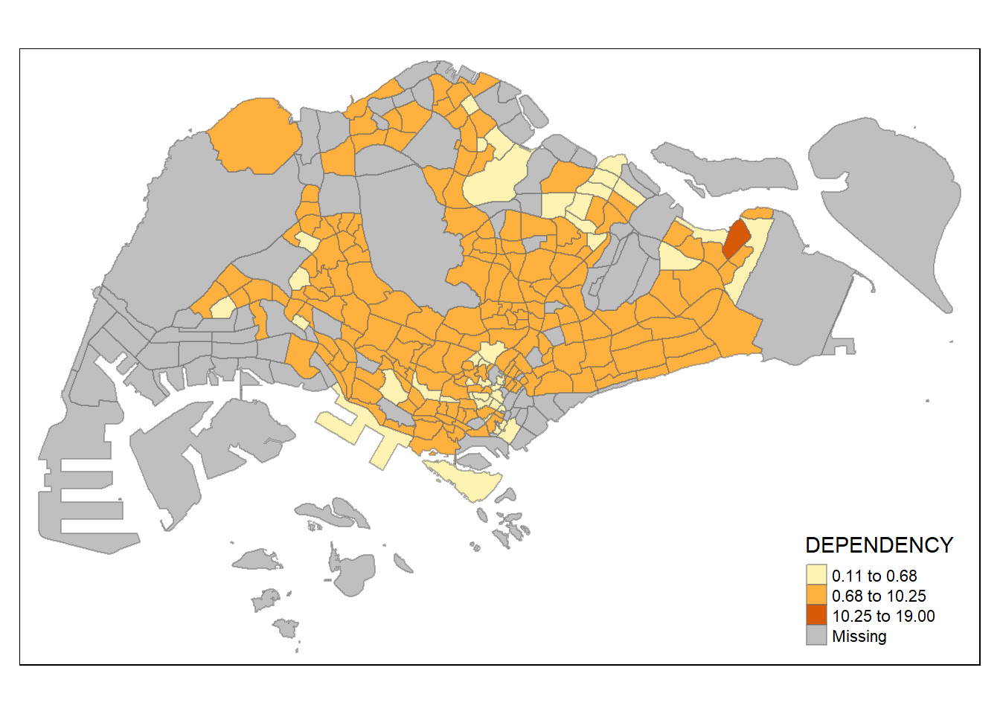
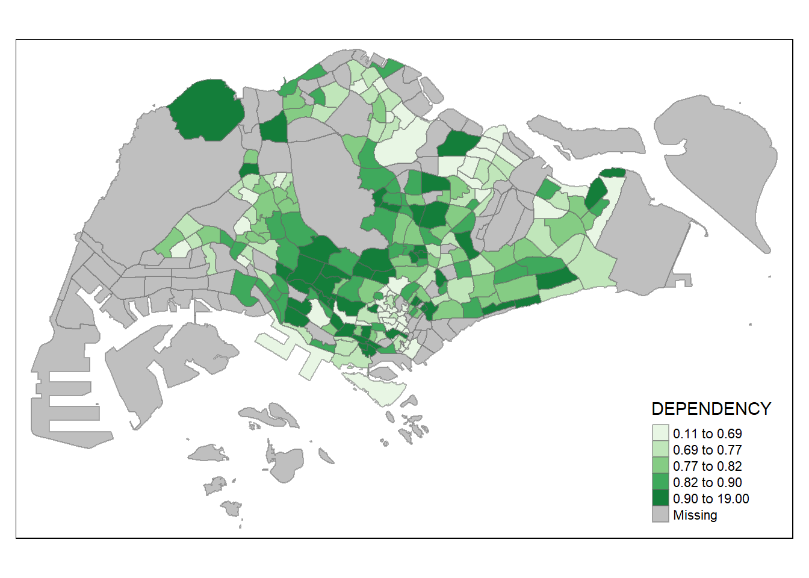

pacman::p_load(sf, tidyverse, tmap)Hands-on Exercise 1
Getting Started
Install and launching R packages
The code chunk below uses p_load() of pacman package to check if tidyverse and sf packages are installed in the computer. If they are, then they will be launched into R.
1 Geospatial Data Science with R
Loading packages
1.4 Importing Geospatial Data
1.4.1 Importing polygon feature data in shapefile format
mpsz = st_read(dsn = "C:/jhui-chen/ISSS626-GAA/Hands-on_Ex/Hands-on_Ex01/data/geospatial",
layer = "MP14_SUBZONE_WEB_PL")Reading layer `MP14_SUBZONE_WEB_PL' from data source
`C:\jhui-chen\ISSS626-GAA\Hands-on_Ex\Hands-on_Ex01\data\geospatial'
using driver `ESRI Shapefile'
Simple feature collection with 323 features and 15 fields
Geometry type: MULTIPOLYGON
Dimension: XY
Bounding box: xmin: 2667.538 ymin: 15748.72 xmax: 56396.44 ymax: 50256.33
Projected CRS: SVY211.4.2 Importing polyline feature data in shapefile form
cyclingpath = st_read(dsn = "C:/jhui-chen/ISSS626-GAA/Hands-on_Ex/Hands-on_Ex01/data/geospatial",
layer = "CyclingPathGazette")Reading layer `CyclingPathGazette' from data source
`C:\jhui-chen\ISSS626-GAA\Hands-on_Ex\Hands-on_Ex01\data\geospatial'
using driver `ESRI Shapefile'
Simple feature collection with 3138 features and 2 fields
Geometry type: MULTILINESTRING
Dimension: XY
Bounding box: xmin: 11854.32 ymin: 28347.98 xmax: 42644.17 ymax: 48948.15
Projected CRS: SVY211.4.3 Importing GIS data in kml format
preschool = st_read("C:/jhui-chen/ISSS626-GAA/Hands-on_Ex/Hands-on_Ex01/data/geospatial/PreSchoolsLocation.kml")Reading layer `PRESCHOOLS_LOCATION' from data source
`C:\jhui-chen\ISSS626-GAA\Hands-on_Ex\Hands-on_Ex01\data\geospatial\PreSchoolsLocation.kml'
using driver `KML'
Simple feature collection with 2290 features and 2 fields
Geometry type: POINT
Dimension: XYZ
Bounding box: xmin: 103.6878 ymin: 1.247759 xmax: 103.9897 ymax: 1.462134
z_range: zmin: 0 zmax: 0
Geodetic CRS: WGS 841.5 Checking the Content of A Simple Feature Data Frame
Working with st_geometry(), glimpse() and head()
st_geometry(mpsz)Geometry set for 323 features
Geometry type: MULTIPOLYGON
Dimension: XY
Bounding box: xmin: 2667.538 ymin: 15748.72 xmax: 56396.44 ymax: 50256.33
Projected CRS: SVY21
First 5 geometries:MULTIPOLYGON (((31495.56 30140.01, 31980.96 296...MULTIPOLYGON (((29092.28 30021.89, 29119.64 300...MULTIPOLYGON (((29932.33 29879.12, 29947.32 298...MULTIPOLYGON (((27131.28 30059.73, 27088.33 297...MULTIPOLYGON (((26451.03 30396.46, 26440.47 303...glimpse(mpsz)Rows: 323
Columns: 16
$ OBJECTID <int> 1, 2, 3, 4, 5, 6, 7, 8, 9, 10, 11, 12, 13, 14, 15, 16, 17, …
$ SUBZONE_NO <int> 1, 1, 3, 8, 3, 7, 9, 2, 13, 7, 12, 6, 1, 5, 1, 1, 3, 2, 2, …
$ SUBZONE_N <chr> "MARINA SOUTH", "PEARL'S HILL", "BOAT QUAY", "HENDERSON HIL…
$ SUBZONE_C <chr> "MSSZ01", "OTSZ01", "SRSZ03", "BMSZ08", "BMSZ03", "BMSZ07",…
$ CA_IND <chr> "Y", "Y", "Y", "N", "N", "N", "N", "Y", "N", "N", "N", "N",…
$ PLN_AREA_N <chr> "MARINA SOUTH", "OUTRAM", "SINGAPORE RIVER", "BUKIT MERAH",…
$ PLN_AREA_C <chr> "MS", "OT", "SR", "BM", "BM", "BM", "BM", "SR", "QT", "QT",…
$ REGION_N <chr> "CENTRAL REGION", "CENTRAL REGION", "CENTRAL REGION", "CENT…
$ REGION_C <chr> "CR", "CR", "CR", "CR", "CR", "CR", "CR", "CR", "CR", "CR",…
$ INC_CRC <chr> "5ED7EB253F99252E", "8C7149B9EB32EEFC", "C35FEFF02B13E0E5",…
$ FMEL_UPD_D <date> 2014-12-05, 2014-12-05, 2014-12-05, 2014-12-05, 2014-12-05…
$ X_ADDR <dbl> 31595.84, 28679.06, 29654.96, 26782.83, 26201.96, 25358.82,…
$ Y_ADDR <dbl> 29220.19, 29782.05, 29974.66, 29933.77, 30005.70, 29991.38,…
$ SHAPE_Leng <dbl> 5267.381, 3506.107, 1740.926, 3313.625, 2825.594, 4428.913,…
$ SHAPE_Area <dbl> 1630379.27, 559816.25, 160807.50, 595428.89, 387429.44, 103…
$ geometry <MULTIPOLYGON [m]> MULTIPOLYGON (((31495.56 30..., MULTIPOLYGON (…head(mpsz, n=5)Simple feature collection with 5 features and 15 fields
Geometry type: MULTIPOLYGON
Dimension: XY
Bounding box: xmin: 25867.68 ymin: 28369.47 xmax: 32362.39 ymax: 30435.54
Projected CRS: SVY21
OBJECTID SUBZONE_NO SUBZONE_N SUBZONE_C CA_IND PLN_AREA_N
1 1 1 MARINA SOUTH MSSZ01 Y MARINA SOUTH
2 2 1 PEARL'S HILL OTSZ01 Y OUTRAM
3 3 3 BOAT QUAY SRSZ03 Y SINGAPORE RIVER
4 4 8 HENDERSON HILL BMSZ08 N BUKIT MERAH
5 5 3 REDHILL BMSZ03 N BUKIT MERAH
PLN_AREA_C REGION_N REGION_C INC_CRC FMEL_UPD_D X_ADDR
1 MS CENTRAL REGION CR 5ED7EB253F99252E 2014-12-05 31595.84
2 OT CENTRAL REGION CR 8C7149B9EB32EEFC 2014-12-05 28679.06
3 SR CENTRAL REGION CR C35FEFF02B13E0E5 2014-12-05 29654.96
4 BM CENTRAL REGION CR 3775D82C5DDBEFBD 2014-12-05 26782.83
5 BM CENTRAL REGION CR 85D9ABEF0A40678F 2014-12-05 26201.96
Y_ADDR SHAPE_Leng SHAPE_Area geometry
1 29220.19 5267.381 1630379.3 MULTIPOLYGON (((31495.56 30...
2 29782.05 3506.107 559816.2 MULTIPOLYGON (((29092.28 30...
3 29974.66 1740.926 160807.5 MULTIPOLYGON (((29932.33 29...
4 29933.77 3313.625 595428.9 MULTIPOLYGON (((27131.28 30...
5 30005.70 2825.594 387429.4 MULTIPOLYGON (((26451.03 30...1.6 Plotting the Geospatial Data
plot(mpsz)Warning: plotting the first 9 out of 15 attributes; use max.plot = 15 to plot
all
plot(st_geometry(mpsz))
plot(mpsz["PLN_AREA_N"])
1.7 Working with Projection
1.7.1 Assigning EPSG code to a simple feature data frame EPSG code shown is 9001, which is wrong because correct EPSG code for svy21 should be 3414
st_crs(mpsz)Coordinate Reference System:
User input: SVY21
wkt:
PROJCRS["SVY21",
BASEGEOGCRS["SVY21[WGS84]",
DATUM["World Geodetic System 1984",
ELLIPSOID["WGS 84",6378137,298.257223563,
LENGTHUNIT["metre",1]],
ID["EPSG",6326]],
PRIMEM["Greenwich",0,
ANGLEUNIT["Degree",0.0174532925199433]]],
CONVERSION["unnamed",
METHOD["Transverse Mercator",
ID["EPSG",9807]],
PARAMETER["Latitude of natural origin",1.36666666666667,
ANGLEUNIT["Degree",0.0174532925199433],
ID["EPSG",8801]],
PARAMETER["Longitude of natural origin",103.833333333333,
ANGLEUNIT["Degree",0.0174532925199433],
ID["EPSG",8802]],
PARAMETER["Scale factor at natural origin",1,
SCALEUNIT["unity",1],
ID["EPSG",8805]],
PARAMETER["False easting",28001.642,
LENGTHUNIT["metre",1],
ID["EPSG",8806]],
PARAMETER["False northing",38744.572,
LENGTHUNIT["metre",1],
ID["EPSG",8807]]],
CS[Cartesian,2],
AXIS["(E)",east,
ORDER[1],
LENGTHUNIT["metre",1,
ID["EPSG",9001]]],
AXIS["(N)",north,
ORDER[2],
LENGTHUNIT["metre",1,
ID["EPSG",9001]]]]Assign correct EPSG code to mpsz data frame and checking that EPSG code.
mpsz3414 <- st_set_crs(mpsz, 3414)Warning: st_crs<- : replacing crs does not reproject data; use st_transform for
thatst_crs(mpsz3414)Coordinate Reference System:
User input: EPSG:3414
wkt:
PROJCRS["SVY21 / Singapore TM",
BASEGEOGCRS["SVY21",
DATUM["SVY21",
ELLIPSOID["WGS 84",6378137,298.257223563,
LENGTHUNIT["metre",1]]],
PRIMEM["Greenwich",0,
ANGLEUNIT["degree",0.0174532925199433]],
ID["EPSG",4757]],
CONVERSION["Singapore Transverse Mercator",
METHOD["Transverse Mercator",
ID["EPSG",9807]],
PARAMETER["Latitude of natural origin",1.36666666666667,
ANGLEUNIT["degree",0.0174532925199433],
ID["EPSG",8801]],
PARAMETER["Longitude of natural origin",103.833333333333,
ANGLEUNIT["degree",0.0174532925199433],
ID["EPSG",8802]],
PARAMETER["Scale factor at natural origin",1,
SCALEUNIT["unity",1],
ID["EPSG",8805]],
PARAMETER["False easting",28001.642,
LENGTHUNIT["metre",1],
ID["EPSG",8806]],
PARAMETER["False northing",38744.572,
LENGTHUNIT["metre",1],
ID["EPSG",8807]]],
CS[Cartesian,2],
AXIS["northing (N)",north,
ORDER[1],
LENGTHUNIT["metre",1]],
AXIS["easting (E)",east,
ORDER[2],
LENGTHUNIT["metre",1]],
USAGE[
SCOPE["Cadastre, engineering survey, topographic mapping."],
AREA["Singapore - onshore and offshore."],
BBOX[1.13,103.59,1.47,104.07]],
ID["EPSG",3414]]1.7.2 Transforming the projection of preschool from wgs84 to svy21 Checking coordinate reference system (CRS) of preschool
print(preschool)Simple feature collection with 2290 features and 2 fields
Geometry type: POINT
Dimension: XYZ
Bounding box: xmin: 103.6878 ymin: 1.247759 xmax: 103.9897 ymax: 1.462134
z_range: zmin: 0 zmax: 0
Geodetic CRS: WGS 84
First 10 features:
Name
1 kml_1
2 kml_2
3 kml_3
4 kml_4
5 kml_5
6 kml_6
7 kml_7
8 kml_8
9 kml_9
10 kml_10
Description
1 <center><table><tr><th colspan='2' align='center'><em>Attributes</em></th></tr><tr bgcolor="#E3E3F3"> <th>CENTRE_NAME</th> <td>CHILDREN'S COVE PRESCHOOL PTE.LTD.</td> </tr><tr bgcolor=""> <th>CENTRE_CODE</th> <td>PT9390</td> </tr><tr bgcolor="#E3E3F3"> <th>INC_CRC</th> <td>498CC9FE48CC94D4</td> </tr><tr bgcolor=""> <th>FMEL_UPD_D</th> <td>20211201093631</td> </tr></table></center>
2 <center><table><tr><th colspan='2' align='center'><em>Attributes</em></th></tr><tr bgcolor="#E3E3F3"> <th>CENTRE_NAME</th> <td>CHILDREN'S COVE PTE. LTD.</td> </tr><tr bgcolor=""> <th>CENTRE_CODE</th> <td>PT8675</td> </tr><tr bgcolor="#E3E3F3"> <th>INC_CRC</th> <td>22877550804213FD</td> </tr><tr bgcolor=""> <th>FMEL_UPD_D</th> <td>20211201093631</td> </tr></table></center>
3 <center><table><tr><th colspan='2' align='center'><em>Attributes</em></th></tr><tr bgcolor="#E3E3F3"> <th>CENTRE_NAME</th> <td>CHILDREN'S VINEYARD PRESCHOOL PTE. LTD</td> </tr><tr bgcolor=""> <th>CENTRE_CODE</th> <td>PT9308</td> </tr><tr bgcolor="#E3E3F3"> <th>INC_CRC</th> <td>B2FE90E44AD494E3</td> </tr><tr bgcolor=""> <th>FMEL_UPD_D</th> <td>20211201093631</td> </tr></table></center>
4 <center><table><tr><th colspan='2' align='center'><em>Attributes</em></th></tr><tr bgcolor="#E3E3F3"> <th>CENTRE_NAME</th> <td>CHILDTIME CARE & DEVELOPMENT CENTRE PTE.LTD.</td> </tr><tr bgcolor=""> <th>CENTRE_CODE</th> <td>PT9122</td> </tr><tr bgcolor="#E3E3F3"> <th>INC_CRC</th> <td>1384CDC0D14B76A1</td> </tr><tr bgcolor=""> <th>FMEL_UPD_D</th> <td>20211201093631</td> </tr></table></center>
5 <center><table><tr><th colspan='2' align='center'><em>Attributes</em></th></tr><tr bgcolor="#E3E3F3"> <th>CENTRE_NAME</th> <td>CHILTERN HOUSE</td> </tr><tr bgcolor=""> <th>CENTRE_CODE</th> <td>PT2070</td> </tr><tr bgcolor="#E3E3F3"> <th>INC_CRC</th> <td>FB24EAA6E73B2723</td> </tr><tr bgcolor=""> <th>FMEL_UPD_D</th> <td>20211201093631</td> </tr></table></center>
6 <center><table><tr><th colspan='2' align='center'><em>Attributes</em></th></tr><tr bgcolor="#E3E3F3"> <th>CENTRE_NAME</th> <td>CHILTERN HOUSE EAST COAST</td> </tr><tr bgcolor=""> <th>CENTRE_CODE</th> <td>PT6550</td> </tr><tr bgcolor="#E3E3F3"> <th>INC_CRC</th> <td>B53C79DF64135499</td> </tr><tr bgcolor=""> <th>FMEL_UPD_D</th> <td>20211201093631</td> </tr></table></center>
7 <center><table><tr><th colspan='2' align='center'><em>Attributes</em></th></tr><tr bgcolor="#E3E3F3"> <th>CENTRE_NAME</th> <td>CHILTERN HOUSE MOUNTBATTEN</td> </tr><tr bgcolor=""> <th>CENTRE_CODE</th> <td>PT8637</td> </tr><tr bgcolor="#E3E3F3"> <th>INC_CRC</th> <td>B53C79DFBF7AD96F</td> </tr><tr bgcolor=""> <th>FMEL_UPD_D</th> <td>20211201093631</td> </tr></table></center>
8 <center><table><tr><th colspan='2' align='center'><em>Attributes</em></th></tr><tr bgcolor="#E3E3F3"> <th>CENTRE_NAME</th> <td>CHILTERN HOUSE TURF CLUB</td> </tr><tr bgcolor=""> <th>CENTRE_CODE</th> <td>PT5400</td> </tr><tr bgcolor="#E3E3F3"> <th>INC_CRC</th> <td>8F2BC6E9BF962BC8</td> </tr><tr bgcolor=""> <th>FMEL_UPD_D</th> <td>20211201093631</td> </tr></table></center>
9 <center><table><tr><th colspan='2' align='center'><em>Attributes</em></th></tr><tr bgcolor="#E3E3F3"> <th>CENTRE_NAME</th> <td>CHINESE CHRISTIAN MISSION LIMITED</td> </tr><tr bgcolor=""> <th>CENTRE_CODE</th> <td>RC0740</td> </tr><tr bgcolor="#E3E3F3"> <th>INC_CRC</th> <td>CA317E72A442CEB6</td> </tr><tr bgcolor=""> <th>FMEL_UPD_D</th> <td>20211201093631</td> </tr></table></center>
10 <center><table><tr><th colspan='2' align='center'><em>Attributes</em></th></tr><tr bgcolor="#E3E3F3"> <th>CENTRE_NAME</th> <td>CHOW & CHOWS CHILDCARE & EARLY LEARNING CENTRE (CCK 542) LTD.</td> </tr><tr bgcolor=""> <th>CENTRE_CODE</th> <td>RC1775</td> </tr><tr bgcolor="#E3E3F3"> <th>INC_CRC</th> <td>2072C1C4F5E69A9C</td> </tr><tr bgcolor=""> <th>FMEL_UPD_D</th> <td>20211201093631</td> </tr></table></center>
geometry
1 POINT Z (103.8072 1.299333 0)
2 POINT Z (103.826 1.312839 0)
3 POINT Z (103.8409 1.348843 0)
4 POINT Z (103.8048 1.435024 0)
5 POINT Z (103.839 1.33315 0)
6 POINT Z (103.8805 1.308027 0)
7 POINT Z (103.8805 1.308027 0)
8 POINT Z (103.7937 1.334636 0)
9 POINT Z (103.7465 1.347444 0)
10 POINT Z (103.7448 1.393605 0)Transforming the projection of preschool from wgs84 to svy21. Checking the CRS
preschool3414 <- st_transform(preschool,
crs = 3414)
print(preschool3414)Simple feature collection with 2290 features and 2 fields
Geometry type: POINT
Dimension: XYZ
Bounding box: xmin: 11810.03 ymin: 25596.33 xmax: 45404.24 ymax: 49300.88
z_range: zmin: 0 zmax: 0
Projected CRS: SVY21 / Singapore TM
First 10 features:
Name
1 kml_1
2 kml_2
3 kml_3
4 kml_4
5 kml_5
6 kml_6
7 kml_7
8 kml_8
9 kml_9
10 kml_10
Description
1 <center><table><tr><th colspan='2' align='center'><em>Attributes</em></th></tr><tr bgcolor="#E3E3F3"> <th>CENTRE_NAME</th> <td>CHILDREN'S COVE PRESCHOOL PTE.LTD.</td> </tr><tr bgcolor=""> <th>CENTRE_CODE</th> <td>PT9390</td> </tr><tr bgcolor="#E3E3F3"> <th>INC_CRC</th> <td>498CC9FE48CC94D4</td> </tr><tr bgcolor=""> <th>FMEL_UPD_D</th> <td>20211201093631</td> </tr></table></center>
2 <center><table><tr><th colspan='2' align='center'><em>Attributes</em></th></tr><tr bgcolor="#E3E3F3"> <th>CENTRE_NAME</th> <td>CHILDREN'S COVE PTE. LTD.</td> </tr><tr bgcolor=""> <th>CENTRE_CODE</th> <td>PT8675</td> </tr><tr bgcolor="#E3E3F3"> <th>INC_CRC</th> <td>22877550804213FD</td> </tr><tr bgcolor=""> <th>FMEL_UPD_D</th> <td>20211201093631</td> </tr></table></center>
3 <center><table><tr><th colspan='2' align='center'><em>Attributes</em></th></tr><tr bgcolor="#E3E3F3"> <th>CENTRE_NAME</th> <td>CHILDREN'S VINEYARD PRESCHOOL PTE. LTD</td> </tr><tr bgcolor=""> <th>CENTRE_CODE</th> <td>PT9308</td> </tr><tr bgcolor="#E3E3F3"> <th>INC_CRC</th> <td>B2FE90E44AD494E3</td> </tr><tr bgcolor=""> <th>FMEL_UPD_D</th> <td>20211201093631</td> </tr></table></center>
4 <center><table><tr><th colspan='2' align='center'><em>Attributes</em></th></tr><tr bgcolor="#E3E3F3"> <th>CENTRE_NAME</th> <td>CHILDTIME CARE & DEVELOPMENT CENTRE PTE.LTD.</td> </tr><tr bgcolor=""> <th>CENTRE_CODE</th> <td>PT9122</td> </tr><tr bgcolor="#E3E3F3"> <th>INC_CRC</th> <td>1384CDC0D14B76A1</td> </tr><tr bgcolor=""> <th>FMEL_UPD_D</th> <td>20211201093631</td> </tr></table></center>
5 <center><table><tr><th colspan='2' align='center'><em>Attributes</em></th></tr><tr bgcolor="#E3E3F3"> <th>CENTRE_NAME</th> <td>CHILTERN HOUSE</td> </tr><tr bgcolor=""> <th>CENTRE_CODE</th> <td>PT2070</td> </tr><tr bgcolor="#E3E3F3"> <th>INC_CRC</th> <td>FB24EAA6E73B2723</td> </tr><tr bgcolor=""> <th>FMEL_UPD_D</th> <td>20211201093631</td> </tr></table></center>
6 <center><table><tr><th colspan='2' align='center'><em>Attributes</em></th></tr><tr bgcolor="#E3E3F3"> <th>CENTRE_NAME</th> <td>CHILTERN HOUSE EAST COAST</td> </tr><tr bgcolor=""> <th>CENTRE_CODE</th> <td>PT6550</td> </tr><tr bgcolor="#E3E3F3"> <th>INC_CRC</th> <td>B53C79DF64135499</td> </tr><tr bgcolor=""> <th>FMEL_UPD_D</th> <td>20211201093631</td> </tr></table></center>
7 <center><table><tr><th colspan='2' align='center'><em>Attributes</em></th></tr><tr bgcolor="#E3E3F3"> <th>CENTRE_NAME</th> <td>CHILTERN HOUSE MOUNTBATTEN</td> </tr><tr bgcolor=""> <th>CENTRE_CODE</th> <td>PT8637</td> </tr><tr bgcolor="#E3E3F3"> <th>INC_CRC</th> <td>B53C79DFBF7AD96F</td> </tr><tr bgcolor=""> <th>FMEL_UPD_D</th> <td>20211201093631</td> </tr></table></center>
8 <center><table><tr><th colspan='2' align='center'><em>Attributes</em></th></tr><tr bgcolor="#E3E3F3"> <th>CENTRE_NAME</th> <td>CHILTERN HOUSE TURF CLUB</td> </tr><tr bgcolor=""> <th>CENTRE_CODE</th> <td>PT5400</td> </tr><tr bgcolor="#E3E3F3"> <th>INC_CRC</th> <td>8F2BC6E9BF962BC8</td> </tr><tr bgcolor=""> <th>FMEL_UPD_D</th> <td>20211201093631</td> </tr></table></center>
9 <center><table><tr><th colspan='2' align='center'><em>Attributes</em></th></tr><tr bgcolor="#E3E3F3"> <th>CENTRE_NAME</th> <td>CHINESE CHRISTIAN MISSION LIMITED</td> </tr><tr bgcolor=""> <th>CENTRE_CODE</th> <td>RC0740</td> </tr><tr bgcolor="#E3E3F3"> <th>INC_CRC</th> <td>CA317E72A442CEB6</td> </tr><tr bgcolor=""> <th>FMEL_UPD_D</th> <td>20211201093631</td> </tr></table></center>
10 <center><table><tr><th colspan='2' align='center'><em>Attributes</em></th></tr><tr bgcolor="#E3E3F3"> <th>CENTRE_NAME</th> <td>CHOW & CHOWS CHILDCARE & EARLY LEARNING CENTRE (CCK 542) LTD.</td> </tr><tr bgcolor=""> <th>CENTRE_CODE</th> <td>RC1775</td> </tr><tr bgcolor="#E3E3F3"> <th>INC_CRC</th> <td>2072C1C4F5E69A9C</td> </tr><tr bgcolor=""> <th>FMEL_UPD_D</th> <td>20211201093631</td> </tr></table></center>
geometry
1 POINT Z (25089.46 31299.16 0)
2 POINT Z (27189.07 32792.54 0)
3 POINT Z (28844.56 36773.76 0)
4 POINT Z (24821.92 46303.16 0)
5 POINT Z (28637.82 35038.49 0)
6 POINT Z (33248.74 32260.59 0)
7 POINT Z (33248.74 32260.59 0)
8 POINT Z (23591.47 35202.8 0)
9 POINT Z (18338.28 36619.18 0)
10 POINT Z (18148.23 41723.46 0)1.8 Importing and Converting An Aspatial Data
1.8.1 Importing the aspatial data
listings <- read_csv("C:/jhui-chen/ISSS626-GAA/Hands-on_Ex/Hands-on_Ex01/data/aspatial/listings.csv")Rows: 3540 Columns: 18
── Column specification ────────────────────────────────────────────────────────
Delimiter: ","
chr (6): name, host_name, neighbourhood_group, neighbourhood, room_type, l...
dbl (11): id, host_id, latitude, longitude, price, minimum_nights, number_o...
date (1): last_review
ℹ Use `spec()` to retrieve the full column specification for this data.
ℹ Specify the column types or set `show_col_types = FALSE` to quiet this message.print(listings)# A tibble: 3,540 × 18
id name host_id host_name neighbourhood_group neighbourhood latitude
<dbl> <chr> <dbl> <chr> <chr> <chr> <dbl>
1 71609 Ensuite … 367042 Belinda East Region Tampines 1.35
2 71896 B&B Roo… 367042 Belinda East Region Tampines 1.35
3 71903 Room 2-n… 367042 Belinda East Region Tampines 1.35
4 275343 10min wa… 1439258 Kay Central Region Bukit Merah 1.29
5 275344 15 mins … 1439258 Kay Central Region Bukit Merah 1.29
6 289234 Booking … 367042 Belinda East Region Tampines 1.34
7 294281 5 mins w… 1521514 Elizabeth Central Region Newton 1.31
8 324945 Comforta… 1439258 Kay Central Region Bukit Merah 1.29
9 330095 Relaxing… 1439258 Kay Central Region Bukit Merah 1.29
10 344803 Budget s… 367042 Belinda East Region Tampines 1.35
# ℹ 3,530 more rows
# ℹ 11 more variables: longitude <dbl>, room_type <chr>, price <dbl>,
# minimum_nights <dbl>, number_of_reviews <dbl>, last_review <date>,
# reviews_per_month <dbl>, calculated_host_listings_count <dbl>,
# availability_365 <dbl>, number_of_reviews_ltm <dbl>, license <chr>1.8.2 Creating a simple feature data frame from an aspatial data frame
listings_sf <- st_as_sf(listings,
coords = c("longitude", "latitude"),
crs=4326) %>%
st_transform(crs = 3414)
glimpse(listings_sf)Rows: 3,540
Columns: 17
$ id <dbl> 71609, 71896, 71903, 275343, 275344, 28…
$ name <chr> "Ensuite Room (Room 1 & 2) near EXPO", …
$ host_id <dbl> 367042, 367042, 367042, 1439258, 143925…
$ host_name <chr> "Belinda", "Belinda", "Belinda", "Kay",…
$ neighbourhood_group <chr> "East Region", "East Region", "East Reg…
$ neighbourhood <chr> "Tampines", "Tampines", "Tampines", "Bu…
$ room_type <chr> "Private room", "Private room", "Privat…
$ price <dbl> NA, 80, 80, 50, 50, NA, 85, 65, 45, 54,…
$ minimum_nights <dbl> 92, 92, 92, 180, 180, 92, 92, 180, 180,…
$ number_of_reviews <dbl> 19, 24, 46, 20, 16, 12, 131, 17, 5, 60,…
$ last_review <date> 2020-01-17, 2019-10-13, 2020-01-09, 20…
$ reviews_per_month <dbl> 0.12, 0.15, 0.29, 0.15, 0.11, 0.08, 0.8…
$ calculated_host_listings_count <dbl> 6, 6, 6, 49, 49, 6, 7, 49, 49, 6, 7, 7,…
$ availability_365 <dbl> 89, 148, 90, 62, 0, 88, 365, 0, 0, 365,…
$ number_of_reviews_ltm <dbl> 0, 0, 0, 0, 2, 0, 0, 1, 1, 1, 0, 0, 0, …
$ license <chr> NA, NA, NA, "S0399", "S0399", NA, NA, "…
$ geometry <POINT [m]> POINT (41972.5 36390.05), POINT (…1.9 Geoprocessing with sf package
1.9.1 Buffering Buffering, compute 5 meter buffer around cycling path, calculating area of the buffer.
buffer_cycling <- st_buffer(cyclingpath,
dist=5, nQuadSegs = 30)
buffer_cycling$AREA <- st_area(buffer_cycling)
sum(buffer_cycling$AREA)2218855 [m^2]1.9.2 Point-in-polygon count Count number of pre-schools in each planning subzone
mpsz3414$`PreSch Count`<- lengths(st_intersects(mpsz3414, preschool3414))
summary(mpsz3414$`PreSch Count`) Min. 1st Qu. Median Mean 3rd Qu. Max.
0.00 0.00 4.00 7.09 10.00 72.00 Determine the planning subzone with the most pre-schools
top_n(mpsz3414, 1, `PreSch Count`)Simple feature collection with 1 feature and 16 fields
Geometry type: MULTIPOLYGON
Dimension: XY
Bounding box: xmin: 39655.33 ymin: 35966 xmax: 42940.57 ymax: 38622.37
Projected CRS: SVY21 / Singapore TM
OBJECTID SUBZONE_NO SUBZONE_N SUBZONE_C CA_IND PLN_AREA_N PLN_AREA_C
1 189 2 TAMPINES EAST TMSZ02 N TAMPINES TM
REGION_N REGION_C INC_CRC FMEL_UPD_D X_ADDR Y_ADDR SHAPE_Leng
1 EAST REGION ER 21658EAAF84F4D8D 2014-12-05 41122.55 37392.39 10180.62
SHAPE_Area geometry PreSch Count
1 4339824 MULTIPOLYGON (((42196.76 38... 72Calculate the density of pre-school by planning subzone Firstly, the code chunk below uses st_area() of sf package to derive the area of each planning subzone. Next, mutate() of dplyr package is used to compute the density by using the code chunk below.
mpsz3414$Area <- mpsz3414 %>%
st_area()
mpsz3414 <- mpsz3414 %>%
mutate(`PreSch Density` = `PreSch Count`/Area * 1000000)1.10 Exploratory Data Analysis (EDA)
hist(mpsz3414$`PreSch Density`)
ggplot(data=mpsz3414,
aes(x= as.numeric(`PreSch Density`)))+
geom_histogram(bins=20,
color="black",
fill="light blue") +
labs(title = "Are pre-school even distributed in Singapore?",
subtitle= "There are many planning sub-zones with a single pre-school, on the other hand,\nthere are two planning subzones with at least 20 pre-schools",
x = "Pre-school density (per km sq)",
y = "Frequency")
ggplot(data=mpsz3414,
aes(y = `PreSch Count`,
x= as.numeric(`PreSch Density`)))+
geom_point(color="black",
fill="light blue") +
xlim(0, 40) +
ylim(0, 40) +
labs(title = "",
x = "Pre-school density (per km sq)",
y = "Pre-school count")Warning: Removed 2 rows containing missing values or values outside the scale range
(`geom_point()`).
2 Thematic Mapping and GeoVisualisation with R
2.3 Importing Data into R
2.3.2 Importing Geospatial Data into R
mpsz = st_read(dsn = "C:/jhui-chen/ISSS626-GAA/Hands-on_Ex/Hands-on_Ex01/data/geospatial",
layer = "MP14_SUBZONE_WEB_PL")Reading layer `MP14_SUBZONE_WEB_PL' from data source
`C:\jhui-chen\ISSS626-GAA\Hands-on_Ex\Hands-on_Ex01\data\geospatial'
using driver `ESRI Shapefile'
Simple feature collection with 323 features and 15 fields
Geometry type: MULTIPOLYGON
Dimension: XY
Bounding box: xmin: 2667.538 ymin: 15748.72 xmax: 56396.44 ymax: 50256.33
Projected CRS: SVY21mpszSimple feature collection with 323 features and 15 fields
Geometry type: MULTIPOLYGON
Dimension: XY
Bounding box: xmin: 2667.538 ymin: 15748.72 xmax: 56396.44 ymax: 50256.33
Projected CRS: SVY21
First 10 features:
OBJECTID SUBZONE_NO SUBZONE_N SUBZONE_C CA_IND PLN_AREA_N
1 1 1 MARINA SOUTH MSSZ01 Y MARINA SOUTH
2 2 1 PEARL'S HILL OTSZ01 Y OUTRAM
3 3 3 BOAT QUAY SRSZ03 Y SINGAPORE RIVER
4 4 8 HENDERSON HILL BMSZ08 N BUKIT MERAH
5 5 3 REDHILL BMSZ03 N BUKIT MERAH
6 6 7 ALEXANDRA HILL BMSZ07 N BUKIT MERAH
7 7 9 BUKIT HO SWEE BMSZ09 N BUKIT MERAH
8 8 2 CLARKE QUAY SRSZ02 Y SINGAPORE RIVER
9 9 13 PASIR PANJANG 1 QTSZ13 N QUEENSTOWN
10 10 7 QUEENSWAY QTSZ07 N QUEENSTOWN
PLN_AREA_C REGION_N REGION_C INC_CRC FMEL_UPD_D X_ADDR
1 MS CENTRAL REGION CR 5ED7EB253F99252E 2014-12-05 31595.84
2 OT CENTRAL REGION CR 8C7149B9EB32EEFC 2014-12-05 28679.06
3 SR CENTRAL REGION CR C35FEFF02B13E0E5 2014-12-05 29654.96
4 BM CENTRAL REGION CR 3775D82C5DDBEFBD 2014-12-05 26782.83
5 BM CENTRAL REGION CR 85D9ABEF0A40678F 2014-12-05 26201.96
6 BM CENTRAL REGION CR 9D286521EF5E3B59 2014-12-05 25358.82
7 BM CENTRAL REGION CR 7839A8577144EFE2 2014-12-05 27680.06
8 SR CENTRAL REGION CR 48661DC0FBA09F7A 2014-12-05 29253.21
9 QT CENTRAL REGION CR 1F721290C421BFAB 2014-12-05 22077.34
10 QT CENTRAL REGION CR 3580D2AFFBEE914C 2014-12-05 24168.31
Y_ADDR SHAPE_Leng SHAPE_Area geometry
1 29220.19 5267.381 1630379.3 MULTIPOLYGON (((31495.56 30...
2 29782.05 3506.107 559816.2 MULTIPOLYGON (((29092.28 30...
3 29974.66 1740.926 160807.5 MULTIPOLYGON (((29932.33 29...
4 29933.77 3313.625 595428.9 MULTIPOLYGON (((27131.28 30...
5 30005.70 2825.594 387429.4 MULTIPOLYGON (((26451.03 30...
6 29991.38 4428.913 1030378.8 MULTIPOLYGON (((25899.7 297...
7 30230.86 3275.312 551732.0 MULTIPOLYGON (((27746.95 30...
8 30222.86 2208.619 290184.7 MULTIPOLYGON (((29351.26 29...
9 29893.78 6571.323 1084792.3 MULTIPOLYGON (((20996.49 30...
10 30104.18 3454.239 631644.3 MULTIPOLYGON (((24472.11 29...2.3.3 Importing Attribute Data into R
popdata <- read_csv("C:/jhui-chen/ISSS626-GAA/Hands-on_Ex/Hands-on_Ex01/data/aspatial/respopagesextod2011to2020.csv")Rows: 984656 Columns: 7
── Column specification ────────────────────────────────────────────────────────
Delimiter: ","
chr (5): PA, SZ, AG, Sex, TOD
dbl (2): Pop, Time
ℹ Use `spec()` to retrieve the full column specification for this data.
ℹ Specify the column types or set `show_col_types = FALSE` to quiet this message.popdata# A tibble: 984,656 × 7
PA SZ AG Sex TOD Pop Time
<chr> <chr> <chr> <chr> <chr> <dbl> <dbl>
1 Ang Mo Kio Ang Mo Kio Town Centre 0_to_4 Males HDB 1- and 2-Ro… 0 2011
2 Ang Mo Kio Ang Mo Kio Town Centre 0_to_4 Males HDB 3-Room Flats 10 2011
3 Ang Mo Kio Ang Mo Kio Town Centre 0_to_4 Males HDB 4-Room Flats 30 2011
4 Ang Mo Kio Ang Mo Kio Town Centre 0_to_4 Males HDB 5-Room and … 50 2011
5 Ang Mo Kio Ang Mo Kio Town Centre 0_to_4 Males HUDC Flats (exc… 0 2011
6 Ang Mo Kio Ang Mo Kio Town Centre 0_to_4 Males Landed Properti… 0 2011
7 Ang Mo Kio Ang Mo Kio Town Centre 0_to_4 Males Condominiums an… 40 2011
8 Ang Mo Kio Ang Mo Kio Town Centre 0_to_4 Males Others 0 2011
9 Ang Mo Kio Ang Mo Kio Town Centre 0_to_4 Females HDB 1- and 2-Ro… 0 2011
10 Ang Mo Kio Ang Mo Kio Town Centre 0_to_4 Females HDB 3-Room Flats 10 2011
# ℹ 984,646 more rows2.3.4 Data Preparation
2.3.4.1 Data wrangling
popdata2020 <- popdata %>%
filter(Time == 2020) %>%
group_by(PA, SZ, AG) %>%
summarise(`POP` = sum(`Pop`)) %>%
ungroup()%>%
pivot_wider(names_from=AG,
values_from=POP) %>%
mutate(YOUNG = rowSums(.[3:6])
+rowSums(.[12])) %>%
mutate(`ECONOMY ACTIVE` = rowSums(.[7:11])+
rowSums(.[13:15]))%>%
mutate(`AGED`=rowSums(.[16:21])) %>%
mutate(`TOTAL`=rowSums(.[3:21])) %>%
mutate(`DEPENDENCY` = (`YOUNG` + `AGED`)
/`ECONOMY ACTIVE`) %>%
select(`PA`, `SZ`, `YOUNG`,
`ECONOMY ACTIVE`, `AGED`,
`TOTAL`, `DEPENDENCY`)`summarise()` has grouped output by 'PA', 'SZ'. You can override using the
`.groups` argument.view(popdata2020)2.3.4.2 Joining the attribute data and geospatial data
popdata2020 <- popdata2020 %>%
mutate_at(.vars = vars(PA, SZ),
.funs = list(toupper)) %>%
filter(`ECONOMY ACTIVE` > 0)
mpsz_pop2020 <- left_join(mpsz, popdata2020,
by = c("SUBZONE_N" = "SZ"))
write_rds(mpsz_pop2020, "C:/jhui-chen/ISSS626-GAA/Hands-on_Ex/Hands-on_Ex01/data/rds/mpszpop2020.rds")2.4 Choropleth Mapping Geospatial Data Using tmap
2.4.1 Plotting a choropleth map quickly by using qtm()
tmap_mode("plot")tmap mode set to plottingqtm(mpsz_pop2020,
fill = "DEPENDENCY")
2.4.2 Creating a choropleth map by using tmap’s elements
tm_shape(mpsz_pop2020)+
tm_fill("DEPENDENCY",
style = "quantile",
palette = "Blues",
title = "Dependency ratio") +
tm_layout(main.title = "Distribution of Dependency Ratio by planning subzone",
main.title.position = "center",
main.title.size = 1.2,
legend.height = 0.45,
legend.width = 0.35,
frame = TRUE) +
tm_borders(alpha = 0.5) +
tm_compass(type="8star", size = 2) +
tm_scale_bar() +
tm_grid(alpha =0.2) +
tm_credits("Source: Planning Sub-zone boundary from Urban Redevelopment Authority (URA)\nand Population data from Department of Statistics (DOS)",
position = c("left", "bottom"))
2.4.2.1 Drawing a base map
tm_shape(mpsz_pop2020) +
tm_polygons()
2.4.2.2 Drawing a choropleth map using tm_polygons()
tm_shape(mpsz_pop2020)+
tm_polygons("DEPENDENCY")
2.4.2.3 Drawing a choropleth map using tm_fill() and *tm_border()**
tm_shape(mpsz_pop2020)+
tm_fill("DEPENDENCY")
tm_shape(mpsz_pop2020)+
tm_fill("DEPENDENCY") +
tm_borders(lwd = 0.1, alpha = 1)
2.4.3 Data classification methods of tmap
2.4.3.1 Plotting choropleth maps with built-in classification methods
tm_shape(mpsz_pop2020)+
tm_fill("DEPENDENCY",
n = 5,
style = "quantile") +
tm_borders(alpha = 0.5)
tm_shape(mpsz_pop2020)+
tm_fill("DEPENDENCY",
n = 5,
style = "equal") +
tm_borders(alpha = 0.5)
tm_shape(mpsz_pop2020)+
tm_fill("DEPENDENCY",
n = 5,
style = "equal") +
tm_borders(alpha = 0.5)
tm_shape(mpsz_pop2020)+
tm_fill("DEPENDENCY",
n = 5,
style = "kmeans") +
tm_borders(alpha = 0.5)
tm_shape(mpsz_pop2020)+
tm_fill("DEPENDENCY",
n = 3,
style = "kmeans") +
tm_borders(alpha = 0.5)
tm_shape(mpsz_pop2020)+
tm_fill("DEPENDENCY",
n = 5,
style = "pretty") +
tm_borders(alpha = 0.5)
2.4.3.2 Plotting choropleth map with custome break
summary(mpsz_pop2020$DEPENDENCY) Min. 1st Qu. Median Mean 3rd Qu. Max. NA's
0.1111 0.7147 0.7866 0.8585 0.8763 19.0000 92 tm_shape(mpsz_pop2020)+
tm_fill("DEPENDENCY",
breaks = c(0, 0.60, 0.70, 0.80, 0.90, 1.00)) +
tm_borders(alpha = 0.5)Warning: Values have found that are higher than the highest break
2.4.4 Colour Scheme
2.4.4.1 Using ColourBrewer palette
tm_shape(mpsz_pop2020)+
tm_fill("DEPENDENCY",
n = 6,
style = "quantile",
palette = "Blues") +
tm_borders(alpha = 0.5)
tm_shape(mpsz_pop2020)+
tm_fill("DEPENDENCY",
style = "quantile",
palette = "Greens") +
tm_borders(alpha = 0.5)
tm_shape(mpsz_pop2020)+
tm_fill("DEPENDENCY",
style = "quantile",
palette = "-Greens") +
tm_borders(alpha = 0.5)
2.4.5 Map Layouts
2.4.5.1 Map Legend
tm_shape(mpsz_pop2020)+
tm_fill("DEPENDENCY",
style = "jenks",
palette = "Blues",
legend.hist = TRUE,
legend.is.portrait = TRUE,
legend.hist.z = 0.1) +
tm_layout(main.title = "Distribution of Dependency Ratio by planning subzone \n(Jenks classification)",
main.title.position = "center",
main.title.size = 1,
legend.height = 0.45,
legend.width = 0.35,
legend.outside = FALSE,
legend.position = c("right", "bottom"),
frame = FALSE) +
tm_borders(alpha = 0.5)
2.4.5.2 Map style
tm_shape(mpsz_pop2020)+
tm_fill("DEPENDENCY",
style = "quantile",
palette = "-Greens") +
tm_borders(alpha = 0.5) +
tmap_style("classic")tmap style set to "classic"other available styles are: "white", "gray", "natural", "cobalt", "col_blind", "albatross", "beaver", "bw", "watercolor" 
2.4.5.3 Cartographic Furniture
tm_shape(mpsz_pop2020)+
tm_fill("DEPENDENCY",
style = "quantile",
palette = "Blues",
title = "No. of persons") +
tm_layout(main.title = "Distribution of Dependency Ratio \nby planning subzone",
main.title.position = "center",
main.title.size = 1.2,
legend.height = 0.45,
legend.width = 0.35,
frame = TRUE) +
tm_borders(alpha = 0.5) +
tm_compass(type="8star", size = 2) +
tm_scale_bar(width = 0.15) +
tm_grid(lwd = 0.1, alpha = 0.2) +
tm_credits("Source: Planning Sub-zone boundary from Urban Redevelopment Authorithy (URA)\n and Population data from Department of Statistics DOS",
position = c("left", "bottom"))
Reset to default style
tmap_style("white")tmap style set to "white"other available styles are: "gray", "natural", "cobalt", "col_blind", "albatross", "beaver", "bw", "classic", "watercolor" 2.4.6 Drawing Small Multiple Choropleth Maps
2.4.6.1 By assigning multiple values to at least one of the aesthetic arguments
tm_shape(mpsz_pop2020)+
tm_fill(c("YOUNG", "AGED"),
style = "equal",
palette = "Blues") +
tm_layout(legend.position = c("right", "bottom")) +
tm_borders(alpha = 0.5) +
tmap_style("white")tmap style set to "white"other available styles are: "gray", "natural", "cobalt", "col_blind", "albatross", "beaver", "bw", "classic", "watercolor" 
tm_shape(mpsz_pop2020)+
tm_polygons(c("DEPENDENCY","AGED"),
style = c("equal", "quantile"),
palette = list("Blues","Greens")) +
tm_layout(legend.position = c("right", "bottom"))
2.4.6.2 By defining a group-by variable in tm_facets()
tm_shape(mpsz_pop2020) +
tm_fill("DEPENDENCY",
style = "quantile",
palette = "Blues",
thres.poly = 0) +
tm_facets(by="REGION_N",
free.coords=TRUE,
drop.shapes=TRUE) +
tm_layout(legend.show = FALSE,
title.position = c("center", "center"),
title.size = 20) +
tm_borders(alpha = 0.5)Warning: The argument drop.shapes has been renamed to drop.units, and is
therefore deprecated
2.4.6.3 By creating multiple stand-alone maps with tmap_arrange()
youngmap <- tm_shape(mpsz_pop2020)+
tm_polygons("YOUNG",
style = "quantile",
palette = "Blues")
agedmap <- tm_shape(mpsz_pop2020)+
tm_polygons("AGED",
style = "quantile",
palette = "Blues")
tmap_arrange(youngmap, agedmap, asp=1, ncol=2)
2.4.7 Mapping Spatial Object Meeting a Selection Criterion
tm_shape(mpsz_pop2020[mpsz_pop2020$REGION_N=="CENTRAL REGION", ])+
tm_fill("DEPENDENCY",
style = "quantile",
palette = "Blues",
legend.hist = TRUE,
legend.is.portrait = TRUE,
legend.hist.z = 0.1) +
tm_layout(legend.outside = TRUE,
legend.height = 0.45,
legend.width = 5.0,
legend.position = c("right", "bottom"),
frame = FALSE) +
tm_borders(alpha = 0.5)Warning in pre_process_gt(x, interactive = interactive, orig_crs =
gm$shape.orig_crs): legend.width controls the width of the legend within a map.
Please use legend.outside.size to control the width of the outside legend